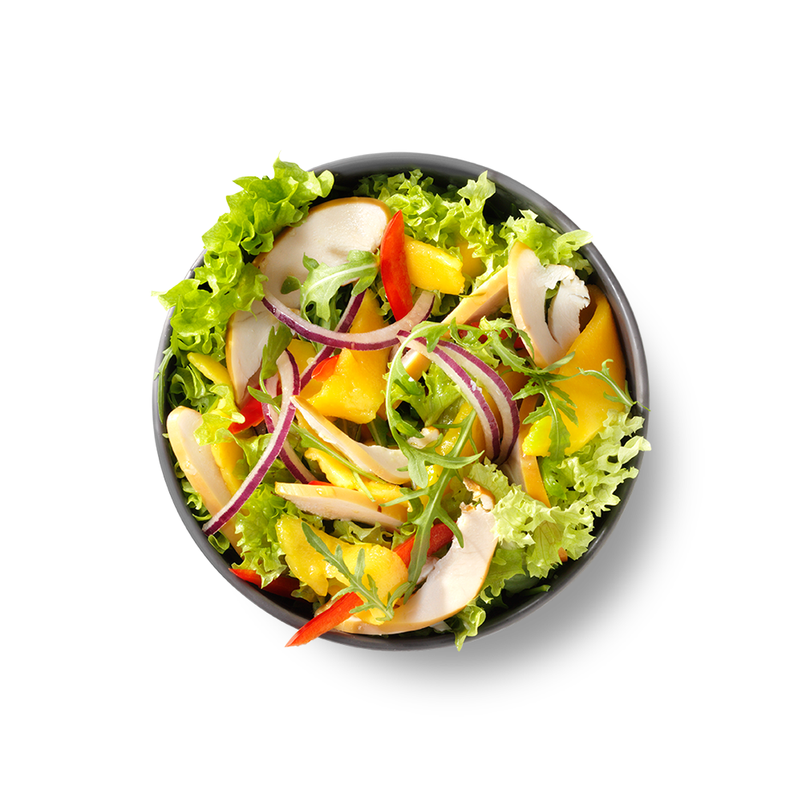

Fresh · No‑cook
Big Protein Salad Bowl
A vibrant, zero‑cook assembly meal that relies entirely on crisp textures and bold dressings. Perfect for hot nights or when you refuse to turn on the stove.
Act I · The Setup
This is more of a blueprint than a strict recipe. Use whatever crunchy vegetables and pre‑cooked protein you have on hand, then let a punchy vinaigrette tie everything together.
Act II · Ingredients
- 3 cups mixed greens or chopped romaine
- 1/2 cup canned chickpeas, rinsed
- 1/2 cup cherry tomatoes, halved
- 1/2 cucumber, diced
- 1/4 red onion, thinly sliced
- 4 oz pre‑cooked protein (leftover grilled chicken, canned tuna, or baked tofu)
- 2 tbsp vinaigrette dressing of choice
Act III · Steps
- Build a large bed of mixed greens in a wide, shallow bowl.
- Arrange the chickpeas, tomatoes, cucumber, onion, and your chosen protein in distinct, colorful sections over the greens.
- Drizzle the vinaigrette evenly over the top.
- Toss everything thoroughly right before eating to ensure every bite is perfectly coated.
Act IV · Tips & shortcuts
Wash and chop your vegetables on Sunday so this bowl only takes 2 minutes to assemble on a Wednesday night. Store the dressing separately so the greens stay crisp.